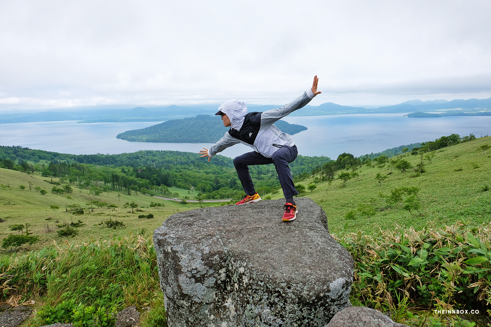

Traversing Hokkaido in 8 days: a road trip itinerary and travel guide

When one imagines traveling to Japan, the first image that comes to mind may be the bustling neon lights of Tokyo, or the tranquil temples in Kyoto. Perhaps even the southern beaches of Kyushu. Hokkaido, Japan’s northerly pastoral island, doesn’t typically rank highly on the list— but I have a feeling that’s about to change. While it still feels off the radar for American travelers, vacationers in Asian countries such as Taiwan, China, South Korea, and Thailand have been increasingly flocking to this bountiful island.
Hokkaido is a nature lover’s dream. Summertime is filled with more vibrant, saturated shades of green and blue than I had ever seen before, but there’s something to see in all seasons. Swap out summer’s melons and lavender blooms for skiing and ice-breaking tours in the wintertime, bursts of red and orange leaves in the fall, or springtime’s cherry blossoms and pink moss phlox. Aside from the outdoorsy type, there’s another kind of traveler that Hokkaido is perfect for: the kind that hates crowds. With the exception of Furano and nearby Biei, it sometimes feels like you have the whole island to yourself. It’s all open road, fertile farmlands, and small cities that feel far from congested by tourism (at least for now).
Speaking of open roads, a road-trip or self-drive, is one of the most popular ways to explore Hokkaido. Which kind of makes sense given that their tourism infrastructure is still somewhat nascent. Having your own set of wheels will also allow you to explore the island at your own pace, which is good, because it simply wouldn’t feel right to be in a rush in a place so relaxed and at ease. Most of the existing itineraries I found suggested circumnavigating the island in 10 days but we managed to do it in 8 days. This felt about right for us, although I can certainly see how I might have filled an extra day or two if I had them. I’ve outlined my itinerary in detail below but you can also skip to the end for alternative itinerary suggestions if you’re interested in expediting or extending the length of your own Hokkaido road-trip.
Before You Go
There are a few housekeeping items you’ll need to take care of before arriving in Hokkaido if you plan to drive yourself around the island. First things first, you’ll need to get an international driver’s license. It’s basically just a multi-language translation of your existing driver’s license that is acceptable in most countries. Just fill out this form and bring the required documents to your nearest AAA location and you can usually get your IDL within 15 minutes.
Next, the car rental. We went with OTS because it was cheaper than the alternatives and the web-site was a lot easier to use to reserve a car in advance. You’ll also have the option to reserve an ETC card, which allows you to use all the expressways in Hokkaido. We decided not to get the ETC card because it was pretty expensive and with some slight speeding we still managed to make good time to get from place to place, plus there are some free sections of the expressway that we were able to use. Your car will probably also come equipped with a GPS but I highly recommend referring to Google Maps for your driving directions instead. The GPS time estimates were really exaggerated— up to twice as long as what Google Maps accurately estimated, especially if you don’t have an ETC card and are avoiding toll roads. For hotels and lodging, refer to my other post about lodging in Hokkaido that corresponds with this itinerary.
Day 1: Arrive in Hakodate
Hakodate is a sleepy little bay-side town that I’m dubbing the San Francisco of Hokkaido (you heard it here first, folks). It’s hilly, foggy, and has its share of Victorian buildings— a result of Hakodate being Japan’s first port open to foreign trade after the Convention of Kanagawa in 1854.
You can reach Hakodate from Honshu via the recently opened Shinkansen station, or hop on an hour long flight. We opted for a round-trip flight from Tokyo to Hakodate which ended up being about the same price as train tickets.
Once you're there; drive to the top of Mt. Hakodate at night for a stunning view of the city and surrounding bay. Take a stroll around the star-shaped Goryokaku Fort and learn about its’s role and history in the Boshin War. Eat at Lucky Pierrot, a colorful clown-themed local chain that serves some dope burgers and spaghetti. Eat breakfast at the Morning Seafood Market, and indulge in all the ice-cream your heart desires— Hokkaido's known for their dairy! My first cone was at a simple stand in the hills of Hakodate, 手作りソフト 大三坂. On the other end of the ice-cream spectrum was the decadent strawberry ice-cream parfait at glacier c’est chouette near Goryokaku Park.
Hakodate is also one of Hokkaido’s three “ramen cities”. Each city has its own style of ramen that it’s famous for. Here, it’s Shio Ramen. However, keep in mind that restaurants close surprisingly early in Hakodate. We had a hard time finding anywhere open past 8 p.m. and ended up at a ramen joint next door to a few gentlemen’s clubs just to get our fix!
Day 2: Hakodate → Otaru → Sapporo
Hit up Hakodate’s Morning Seafood Market on your way out of the city— it’ll help guarantee an early start. We tried some fresh uni from a crowded stand and then picked a restaurant next door to the indoor market for some chirashi for breakfast.
We decided to take a slight detour and hit up the town of Otaru on the way to Sapporo. Both cities are about a four hour drive from Hakodate, with Otaru being about an hour west of Sapporo. Otaru is most known for it’s small canal by the coast, which is particularly pretty when the water reflects back a sunny, cloudless day. We also stopped by Naruto Honten to fuel up on some fried chicken before getting back in the car and heading to Sapporo in time to make our hotel’s happy hour.
Sapporo is Hokkaido’s largest city and in retrospect, it would’ve been nice to add on an extra day to our trip here so that we could experience more of the city’s food scene, or try Sapporo’s famous Miso ramen. We saved our one night in the city to hit up the obligatory Sapporo Beer Garden. In addition to tasting limited edition beers you can only find in the city, the beer hall is also known for its lamb barbecue dishes. They’ll even give you plastic bags to cover your clothes and bags so you don’t take the smell of grilled meat home with you.
Day 3: Sapporo → Nakafurano
It takes about three hours to drive from Sapporo to Nakafurano, but I highly recommend making a slight detour to Makomanai Takino Cemetery. Here you’ll find a stunning, giant stone Buddha enshrined by a minimalist cement circle designed by Tadao Ando. We got to see more of Ando’s work on Naoshima and Teshima but this temple may be my favorite of all his spaces that I’ve experienced. From afar you can see the Buddha’s head just peeking out from a hill surrounded by seasonal lavender blooms. It was like no other temple I’ve seen before, and a nice sneak preview of the flower fields we’d soon see in Nakafurano.
Taking the detour to Makomanai will also help you arrive in Nakafurano later in the afternoon. Here’s why that’s a good idea— Furano is going to be the most crowded and tourist-packed place you’ll visit in Hokkaido. Farm Tomita, which has free admission, is the spot to view epic flower fields and rows upon rows of local lavender in July. By getting there as close to its closing at 6:00pm you can get your golden hour pics and also arrive just as the last of the mega-tour-buses are pulling out of the parking lot. There’s one large lavender field right off the road that most people will be taking photos at. However, if you walk up the left side of that field there’s a little opening that will lead you to another, more secluded field for more optimum photo taking.
Next door to Farm Tomita is Tomita Melon House, a complex that exclusively sells the town’s famous sweet melons and derivative treats. Melon House closes at 5:30pm so I recommend hitting that up first (and taking advantage of their parking lot). Purchase a slice, half, or whole melon and pair it with some ice-cream, but save room for the famous Lavender ice-cream at Farm Tomita as well. By the time you’re done at Melon House, the crowds at Farm Tomita should be thinning out.
Day 4: Nakafurano → Biei → Daisetsuzan National Park → Asahikawa

If you get an early start to your day, swing by Choei Lavender Farm in the morning. This hillside farm has a ski-lift that is only operational during lavender season (June—August). A couple yen gets you a round-trip to the top where you can get a beautiful view of the surrounding farmlands and sneak in a couple more photos in a less-crowded area than Farm Tomita.
A half-hour drive northeast will get you to Shirogane Blue Pond, also known as Blue Pond Biei. It’s a mysterious light turquoise pool of water that was actually man-made to protect the nearby town of Biei from lava flow due to the nearby volcanoes. However, it’s bright blue color was totally unintentional— a quirk due to minerals suspended in the water. The Blue Pond is another hot tourist spot so don’t be surprised to find it packed, but you really don’t need more than twenty minutes here to walk around the pond before getting back on the road.
From the blue pond, continue driving northeast for forty-five minutes to Mt. Asahi-dake, the tallest mountain in Daisetsuzan National Park. Park the your car and take the somewhat pricey (~$30 roundtrip) but worth-it ropeway to the peak for a brisk hike around one of the most stunning and surreal landscapes you’ll ever see.
Daisetsuzan was originally called Kamuimintara (カムイミンタラ) by the Ainu, the indigenous people of Japan. This roughly translates to “garden of the gods” or “garden where the gods play”, which seems fitting for a terrain that consists of vibrant alpine flora, snowy white glaciers and their glassy melting ponds, and billowing stacks of smoke sprouting off an active volcano. Mt. Olympus is real y’all.
After you’re done at Asahi-dake drive about an hour north to the city of Asahikawa for the night. Asahikawa is another one of Hokkaido’s ramen cities so treat yourself to a bowl of shoyu ramen. We went to Aoba Ramen Shop which had the friendliest staff, and even ran into some other Thai tourists there.
Day 5: Asahikawa → Kitami → Abashiri → Koshimizu
This is where your route may alter depending on the season. In the winter it may be more worthwhile to head northeast to Monbetsu for ice-breaking tours on the Sea of Okhotsk, or drive by Takinoue in the spring to see the pink moss phlox in bloom. Since it was summer we headed directly east through Daisetsuzan National Park. Admittedly, the scenery in the summer is a bit monotonous with unending rows of green trees, but in the autumn seasons when the leaves turn colors it’s supposed to be quite breathtaking.
After driving for about three hours we stopped in Kitami to check out Kitakitsune Farm, a small sanctuary for northern foxes. Pulling up to the “farm” it admittedly looked run-down and a bit sketchy. Especially with all the souvenirs and trinkets on sale at the entrance. We paid about 500 yen to go to the large yard in the back where the foxes roam. There were no park attendants out that day so it was just us and the foxes, with no fences nor cages between us. Most of the foxes were sleeping (maybe we arrived at naptime) but the ones that were awake seemed very calm, albeit cautious. You aren’t supposed to pet them and they will kinda stop near you until realizing you don’t have food and then trot away. It was still pretty cool to see the foxes up close— they are ridiculously cute. It was a nice break to stretch our feet, although we were also lucky that we spotted some foxes in the wild crossing the road a few other times on our road trip, so Kitakitsune is definitely not a “must-see” if you want to catch a glimpse.
We then headed to the eastern coast near Abashiri, where there are supposedly blooming patches of wildflowers. I can’t say we saw too many wildflowers but I did see a nice variety of wildlife here: a funky caterpillar, an eagle, some horses, and a ghostly white and red moth. There’s also a short little trail that leads to the beach, where you can look out at the fog folding over the Sea of Okhotsk and know that Russia is somewhere on the other side.
We ended up in the little town of Koshimizu for the night, to stay at this adorable Airbnb I wrote about extensively in my post on lodging in Hokkaido!
Day 6: Koshimizu → Akan National Park → Kushiro
We got a late start on day six because we decided to stop by the potato festival in Koshimizu before leaving town. From there we backtracked about forty-five minutes to Bihoro and then drove south down the Bihoro Pass. At the end of the pass is an observatory, marking the entrance to Akan National Park with breathtaking views of Lake Kussharo. Even on a windy, cloudy day, the water still appeared so bright and blue, and the rolling hills so vividly green.
After visiting the observatory we made a game-time decision to go see Kaminoko Blue Pond on the west side of the park. In retrospect, we could’ve headed directly to Kaminoko from Koshimizu and saved some time, but oh well! The Kaminoko pond is blue in a different way than Blue Pond Biei. The water is much clearer and a deep, cerulean color. We couldn’t really find an explanation on why it was blue, just that the water at the center of the pond is so cold that the fallen trees in there never rot. Access to this pond requires driving slowly through a dirt path so it’s a bit secluded and there were very few other people there.
After Kaminoko we drove back towards the center of the park and stopped by Mt. Io, an active volcano that constantly emits steam and liquid sulphur. The light brown peaks are stained with a bright, sulphuric yellow and a wash of pastel greys and pinks that make it look quite beautiful. That beauty is somewhat tempered by the air smelling faintly like a bag of farts.
From Mt. Io we drove further west to Lake Akan. Due to our late start we arrived at Lake Akan a little too late to really do anything unfortunately. We were able to run into the museum by the lake five minutes before it closed to use the restroom and check out their very small marimo collection. Marimo are these cute little moss balls that grow plentifully in Lake Akan, and have become somewhat of a mascot for the region. If we had gotten there earlier I would’ve have taken a boat trip to the observatory on an island in the middle of the lake where they have an even larger collection of marimo.
Instead we took a quick walk around a short trail by the lake and then got back in the car and headed south towards Kushiro for the night. We ate dinner at this kitschy Japanese western restaurant called Green Parlor where I had a really delicious sweet spaghetti with meat sauce.
Day 7: Kushiro → Noboribetsu
This was the most brutal of driving days. There’s not really much between the city of Kushiro in the east and Noboribetsu in the west so we were looking at a solid six hour drive. If we had more time it would’ve been nice to check out even more wildlife in Kushiro, which is known for its wetlands, but with such a lengthy drive ahead of us we wanted to get to the hot-spring town of Noboribetsu early enough to enjoy as much of the onsen as possible.
About four hours into our drive, a little bit before Chitose, we stopped for a snack at Momo Cafe, tucked into the trees off a slow road. Supposedly if you’re lucky you might catch a glimpse of a chipmunk on the cafe grounds but instead we just saw many bright yellow dragonflies. We ordered a chocolate-banana tart and some drinks and were treated to a complimentary slice of a mini-berry tart. Both tarts were delicious and the perfect hit of sugar to keep us going for the rest of the drive.

When we finally arrived at our onsen in Noboribetsu we emailed changed into our robes and headed down to the baths for a pre-dinner soak. If you don’t want to stay in a hotel with an onsen, there are many bath houses you can simply drop into for a small fee.
Day 8: Noboribetsu → Lake Tōya → Hakodate
After a generous breakfast at the onsen we headed out from Noboribetsu. With a whole day ahead of us and the only goal being to get back to Hakodate by night, we planned to spend some time in Jigokudani Hell Valley, an area with steaming sulphur pools and hot springs just outside of Noboribetsu.
A short but sweaty hike up and over a mountain in Jigokudani will lead you to Oyunuma Pond, a large sulfurous hot spring pond with surface temperatures of 50 degrees celsius. You may even spot a snake going up the mountain trail like I did and then run off screaming down the other side. Walking a little further around the pond will lead you down a path to a heated sulfur river that is used as a public foot bath. Fair warning though, the water is HOT— in the summer I could only stand to have my feet in there for no more than a minute or so before pulling out and letting them cool off on the surface. I can only imagine how great the toasty temperatures would feel in the late fall or winter seasons though.
There is also a bear park located near Jigokudani where you can supposedly feed the bears but I’ve read mixed reviews regarding the well-being of the animals and we decided that we would rather spend the time at Lake Toya on the way back to Hakodate. We grabbed some bento-style lunches from “Hot Chef”, a food stand inside the Hokkaido-based gas station chain Seicomart and decided to eat by the peaceful lake. Like many of the lakes in Hokkaido, Lake Toya is a caldera lake with a cute little island in the middle. The view is really quite peaceful and lush. If you stay late enough there are fireworks set off by the lake in the summertime, however we were exhausted and wanted to get back to Hakodate in time for a relaxing dinner.
A few hours later we were back in Hakodate and at the conclusion of our trip. We wanted to get back to Hakodate the day before flying out so that we weren’t in a rush or at the mercy of traffic trying to catch a late flight on the same day as departing Noboribetsu.
The next morning we dropped our car off at the OTS lot in the airport and a shuttle dropped us off at our terminal. A little over an hour later we were back in Tokyo, reeling from all the wonderful memories of summer in Hokkaido, and a burgeoning curiosity to experience this island in the cooler months of the year.
Alternative Itineraries
- 3—4 Days: Fly Into Chitose Airport → Noboribetsu → Sapporo → Furano (+ Otaru or Niseko)
- 5—6 Days: Noboribetsu → Sapporo → Furano → Biei + Daisetsuzan National Park (+ Hakodate or Asahikawa)
- 10+ Days: Our 8 Day Itinerary + Rishiri-Rebun National Park + Monbetsu (in the winter) + Kushiro Wetlands + Shiretoko National Park
Additional Resources
- The Innbox: Hokkaido Road Trip Lodging Guige
- Lonely Planet: Hokkaido Road Trip Guide
- Jayndee: Hokkaido Road Trip in 10 Days
- Miles of Happiness: 4 Day Itinerary Guide
- Phenomenal Globe: 10 Day Itinerary
Check out more of our travel guides: